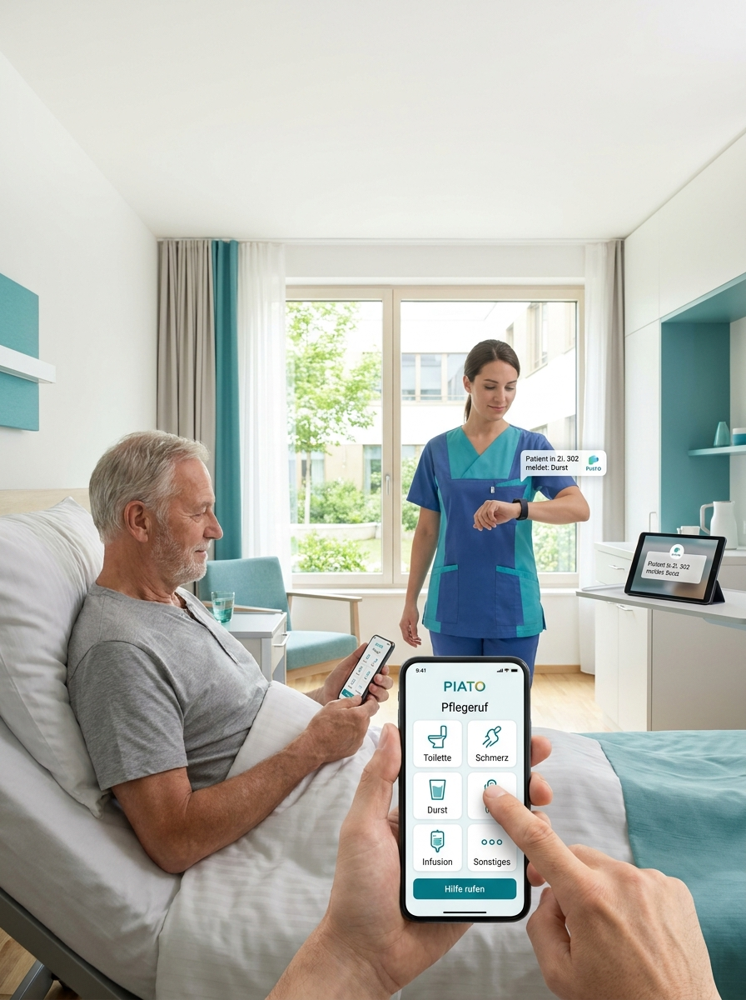

Kliniken
Stationäre Versorgung mit hoher Rufdichte und wechselnden Teams. Anliegen erreichen das Pflegeteam priorisiert, statt als undifferenzierter Ruf – und lassen sich gezielt an die zuständige Person weitergeben.
Von der Klinik bis zur ambulanten Pflege: PIATO Pflegeruf passt sich an die Kommunikationswege der jeweiligen Versorgungsform an.
Stationäre Versorgung mit hoher Rufdichte und wechselnden Teams. Anliegen erreichen das Pflegeteam priorisiert, statt als undifferenzierter Ruf – und lassen sich gezielt an die zuständige Person weitergeben.
Entlastung im Alltag von Pflegeheimen und betreutem Wohnen. Bewohner:innen teilen ihr Anliegen verständlich mit, das Pflegeteam behält den Überblick über offene Vorgänge.
Strukturierte Kommunikation über längere Aufenthalte hinweg. Verläufe bleiben nachvollziehbar, auch wenn sich Teams und Zuständigkeiten über Wochen verändern.
Ruhige, reizarme Kommunikation ohne akustische Dauerbelastung. Anliegen werden sichtbar, ohne dass Signaltöne den Stationsalltag prägen.
Verbindliche Anliegen und Rückmeldungen auch außerhalb der Einrichtung. Kommunikation bleibt strukturiert, obwohl Pflegekräfte und Patient:innen sich nicht am selben Ort befinden.

Die passende PIATO App für Patient:innen und Pflegepersonal direkt herunterladen.